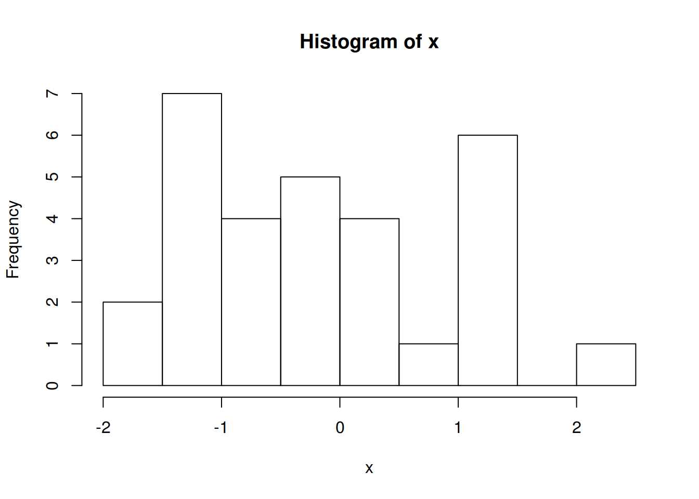

O Markdown é uma linguagem de marcação muito simples, desenvolvida por John Gruber.
A ideia básica por trás da linguagem é fazer com que o escritor se preocupe mais com o conteúdo do texto do que com a formatação.
Aqui vamos tentar descrever uma análise.
No R podemos simular valores de uma distribuição normal padrão através da função rnorm().
Seja \(X \sim \text{N}(0,1)\), então para gerar 30 valores dessa variável aleatório normal, fazemos
(x <- rnorm(30))## [1] -1.70150524 2.23853229 -1.06123146 1.31266159 -0.70517119
## [6] -1.36989329 -1.06468563 0.32530212 -0.26279200 -0.08325737
## [11] 1.35080621 0.08161545 -0.17356146 -1.60923062 -1.31448125
## [16] 1.49289310 -0.68251384 -1.40308059 -0.43649004 -0.54556910
## [21] 0.32095951 1.15442778 -0.83330579 1.04006787 -1.30712887
## [26] -0.37539680 0.42722750 -1.14985825 0.55590543 1.06424987Com o resultado dessa simulação, podemos calcular a média e a variância dessa VA \(X\) para conferir se o resultado fica próximo de 0 e 1, respectivamente.
Também podemos fazer um histograma dessa VA \(X\) simulada
hist(x)